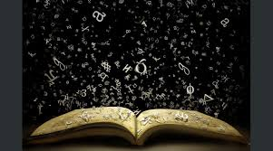
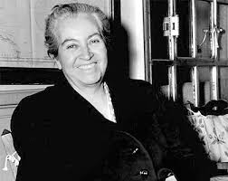

PABLO NERUDA: Fue hijo de José del Carmen Reyes Morales, obrero ferroviario, y de Rosa Neftalí Basoalto Opazo, maestra de escuela fallecida de tuberculosis cuando Neruda tenía un mes de edad.5 En 1906, la familia se trasladó a Temuco, donde su padre se casó en segundas nupcias con Trinidad Candia Marverde, a quien Neruda llamaba mamadre.6 Neruda ingresó al Liceo de Hombres, donde cursó todos sus estudios hasta terminar el 6.º año de humanidades en 1920.5 El entorno natural de Temuco, sus bosques, lagos, ríos y montañas marcaron para siempre el mundo poético de Neruda. En 1917, publicó su primer artículo, Entusiasmo y perseverancia, en el diario La Mañana de Temuco. En esta ciudad, escribió gran parte de los trabajos, que pasaron a integrar su primer libro de poemas: Crepusculario.6 En 1919, obtuvo el tercer lugar en los Juegos Florales del Maule con su poema «Comunión ideal» o «Nocturno ideal».5 Ese mismo año conoció a Gabriela Mistral, por entonces directora del Liceo de Niñas de Temuco7, de cuyo encuentro recordó: «ella me hizo leer los primeros grandes nombres de la literatura rusa que tanta influencia tuvieron sobre mí».8En 1920, comenzó a contribuir en la revista literaria Selva Austral. Hacia 1921, con diecisiete años de edad, comenzó a firmar definitivamente sus trabajos con el seudónimo de Pablo Neruda, esencialmente con el propósito de evitar el malestar del padre por tener un hijo poeta.9 Si bien Neruda nunca aclaró el origen de su nombre artístico, nunca desmintió, e incluso apoyó, la conjetura de que lo habría escogido en honor al escritor checo Jan Neruda,[cita requerida] del cual leyó un cuento por esos años que le causó una honda impresión.
GABRIELA MISTRAL
Gabriela Mistral nació en Vicuña el 7 de abril de 1889, con el nombre de Lucila de María Godoy Alcayaga.5 En la actualidad, en la calle donde vio la luz, se creó en 1957 el museo que lleva su nombre.6 Toda su infancia la pasó en diversas localidades del valle de Elqui, en la actual Región de Coquimbo. A los diez días, sus padres se la llevaron desde Vicuña al cercano pueblo de La Unión (actualmente llamado Pisco Elqui). Entre los tres y los nueve años, Mistral vivió en la pequeña localidad de Montegrande. Sería este lugar el que Mistral consideró su ciudad natal; la poeta se refería a él como su «amado pueblo» y fue allí donde pidió que le dieran sepultura. Hija de Juan Jerónimo Godoy Villanueva, profesor y poeta de ascendencia española, natural de San Félix,7 y de Petronila Alcayaga Rojas, de ascendencia vasca.8 Sus abuelos paternos, oriundos de la actual región de Antofagasta, fueron Gregorio Godoy e Isabel Villanueva; y los maternos, Francisco Alcayaga Barraza y Lucía Rojas Miranda, descendientes de familias propietarias de tierras del valle de Elqui. Por el lado de su madre, Gabriela Mistral tuvo una media hermana mayor, Emelina Molina Alcayaga, hija de Rosendo Molina Rojas, quien fue su primera maestra. Por el de su padre, habría tenido otro hermanastro, llamado Carlos Miguel Godoy Vallejos. Aunque su padre abandonó el hogar cuando ella tenía unos tres años, Gabriela Mistral lo quiso y siempre lo defendió. Cuenta que «revolviendo papeles», encontró unos versos «muy bonitos». «Esos versos de mi padre, los primeros que leí, despertaron mi pasión poética», escribió